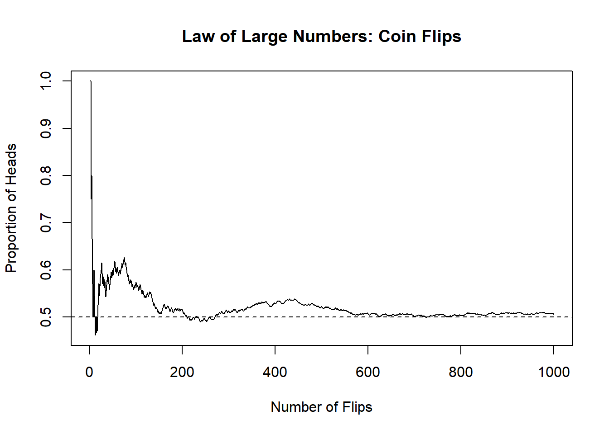

# Simulasi lempar koin untuk menunjukkan pola jangka panjang
set.seed(123)
n_flips <- 1000
flips <- sample(c("Head", "Tail"), n_flips, replace = TRUE)
# Proporsi Head secara kumulatif
cumulative_heads <- cumsum(flips == "Head")
cumulative_prop <- cumulative_heads / (1:n_flips)
# Plot konvergensi ke 0.5
plot(1:n_flips, cumulative_prop, type = "l",
xlab = "Number of Flips",
ylab = "Proportion of Heads",
main = "Law of Large Numbers: Coin Flips")
abline(h = 0.5, lty = 2)